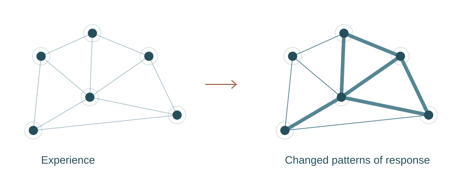
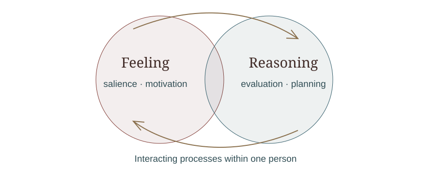
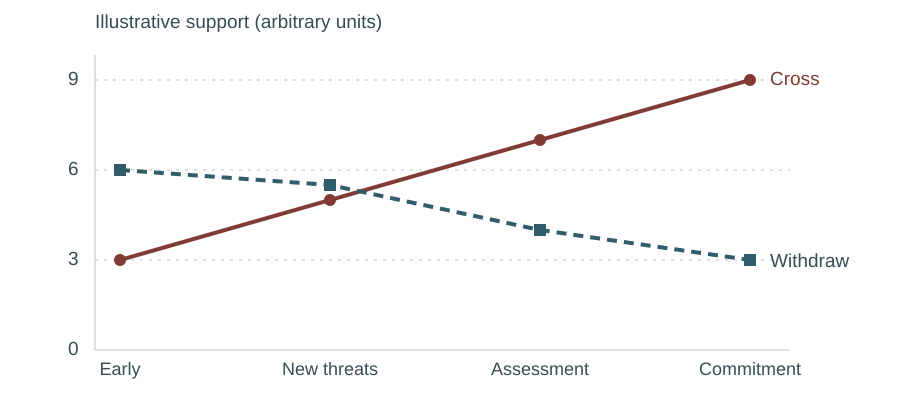
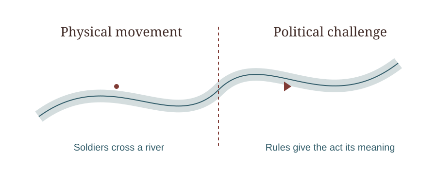
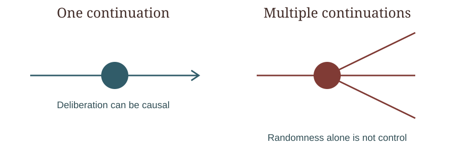

Why Caesar crossed the Rubicon
In January 49 BCE, Julius Caesar led troops across the Rubicon, a small river marking a boundary between his provincial command and Italy. Bringing his army across that boundary without authorization amounted to a direct challenge to the Roman Republic's political order. The decision precipitated a civil war that ultimately transformed Rome.
According to later ancient accounts, Caesar hesitated before crossing and uttered a phrase traditionally rendered in Latin as alea iacta est — “the die is cast.” Plutarch gives a Greek version closer to “let the die be cast.” Whether Caesar actually spoke those words is uncertain. [2]
We know the broad historical circumstances and what Caesar did. We do not have direct access to his thoughts, emotions, neural activity or private calculations at the moment of decision.
Nevertheless, modern science allows us to construct a substantial causal explanation of why he acted.
The central argument of this essay is that Caesar's decision can be understood as an action produced by an entire human organism: its biological capacities, learned knowledge, memories, emotions, ambitions, social relationships and ability to anticipate consequences. No exemption from physical causation is necessary for that decision to qualify as an exercise of agency.
But we must distinguish three levels of explanation throughout:
- Historical evidence: What contemporary and ancient sources establish about Caesar's circumstances and behaviour.
- Empirical science: What experiments with living humans and other animals establish about decision-making mechanisms.
- Scientific reconstruction: How those mechanisms plausibly explain Caesar's decision, without pretending we can measure the mental states of someone who lived over 2,000 years ago.
That distinction matters. A plausible scientific explanation is not the same thing as a demonstrated explanation of every causal detail.
Caesar did not decide in a vacuum
By January 49 BCE, Caesar was approximately 50 years old. He had spent decades developing an extraordinary political and military career.
He had been consul, commanded armies in Gaul, accumulated wealth and prestige, built political alliances and developed strong relationships with soldiers who had served under him for years.
He also faced an increasingly hostile political situation in Rome.
His alliance with Pompey had broken down. Powerful senators demanded that he surrender his military command. Caesar sought arrangements that would protect his political position, including the possibility of standing for consul without first becoming an unprotected private citizen.
He had reasons to fear prosecution, humiliation and political destruction if he relinquished his army. He also had reasons to believe that his military resources gave him a chance of prevailing in a confrontation.
On 7 January 49 BCE, the Senate passed an emergency decree amid the escalating conflict. Tribunes supporting Caesar fled Rome. Within days, Caesar advanced into Italy.
These facts are supported by ancient accounts, although historians disagree about the relative importance of Caesar's fear of prosecution, political ambition, concern for personal honour and claims to defend constitutional rights. Caesar's own narrative is a politically interested source, not a neutral record. [1]
A decision decades in the making
- 58–50 BCECampaigns in Gaul build military experience and power.
- 54–53 BCEThe deaths of Julia and Crassus weaken the alliance.
- 50 BCEDisputes over command and Caesar’s political future intensify.
- January 49 BCEEmergency decree, flight of the tribunes, advance into Italy.
The decision therefore had a history extending over decades.
This is the first important scientific point:
Human decisions are not isolated events. They are the outcomes of systems whose present organization has been shaped by their past.
To understand Caesar's decision, we need to understand how his past could causally influence what he did in January 49 BCE.
How experience becomes a physical cause of action
The human brain is a living organ whose structure and activity change through experience.
When we learn something, neural networks change how they respond and communicate. This process is called neural plasticity.
Memories are not simply documents stored somewhere in the brain. They depend on distributed changes in neural activity, connectivity and cellular processes that allow previous experiences to influence present behaviour.
The past becomes a present capacity

Different forms of learning contribute to different aspects of decision-making.
For example, remembering a particular event, learning that a strategy tends to succeed, developing an emotional response to humiliation and acquiring a skilled habit all involve partly different but interacting mechanisms.
For Caesar, decades of military and political experience would have provided information about matters such as:
- How reliably his soldiers followed orders.
- How his political opponents behaved during previous confrontations.
- What military success and failure could cost him.
- Which political agreements had proved dependable.
- How much he valued honour, status, security and authority.
We cannot establish the precise neural representations Caesar possessed. But we have overwhelming evidence from modern cognitive neuroscience that learning and memory influence subsequent decisions through physical changes in the nervous system.
This means that Caesar's past did not need to exert some mysterious influence over the present.
His experiences could influence his behaviour because they had helped shape the organism making the decision.
His history was causally present in his decision-making capacities.
That is an important sense in which the decision was his.
Caesar had to evaluate an uncertain future
Caesar confronted a difficult choice because he could not know its consequences.
At least three broad courses of action were available for consideration.
Caesar's decision problem, January 49 BCE
Escalating conflict with the Senate
Military strength, political danger, uncertainty
Conceptual reconstruction of the alternatives, not a transcript of Caesar's thoughts. Negotiations and military preparations had already occurred before the crossing.
Three courses. None without risk.
Relinquish command
Potentially avoid war; risk prosecution, political exposure and loss of leverage.
Seek a settlement
Continue bargaining; risk rejection, delay and a worsening political position.
Advance into Italy
Retain the military initiative; risk defeat, civil war and immense harm.
Modern decision science investigates how brains evaluate choices with uncertain outcomes.
One important finding is that decisions are influenced not only by the likely consequences of an action but also by how the individual values those consequences.
For example, losing political office might have mattered enormously to Caesar. Another person, with different experiences and priorities, might have regarded the same outcome as tolerable.
Neuroscience identifies interacting brain systems involved in these evaluations.
The ventromedial prefrontal cortex, a region toward the lower middle of the frontal lobes, contributes to representing the significance of options and outcomes. The orbitofrontal cortex, located above the eye sockets, helps represent relevant features of situations and possible outcomes.
A 2024 review emphasizes that these regions do considerably more than assign simple numerical values. They help represent the structure of the situation, its context and relationships between possible actions and consequences. [4]
For Caesar, such processes plausibly supported evaluations of political survival, military success, honour, danger and uncertainty.
But this is an inference from modern neuroscience, not an observation of Caesar's brain.
An important distinction: value is not the same as pleasure
Caesar need not have believed that civil war would be enjoyable.
A decision can be motivated by the avoidance of an outcome considered intolerable, even when every available alternative is dangerous.
This is particularly relevant to Caesar.
He might have regarded relinquishing command as politically catastrophic while also recognizing that crossing into Italy carried enormous risks.
Under those circumstances, the decision to cross could emerge from an evaluation in which a dangerous action was nevertheless preferable to the alternatives.
We do not know his precise assessment. But modern decision science provides a causal mechanism through which such an assessment could influence behaviour.
Emotion was probably part of the reasoning, not its opposite
Popular descriptions often contrast rational decision-making with emotion.
That distinction is scientifically misleading.
Emotions influence which events we notice, how strongly we value outcomes, what we remember, which dangers seem urgent and how much effort we are willing to invest.
Fear, anger, anticipation, pride and anxiety are not necessarily interruptions of decision-making. They are among the biological processes through which situations acquire significance.
Feeling and reasoning work together

Consider Caesar's possible fear of prosecution.
Such fear could have affected how threatening he found the prospect of returning to Rome without an army.
His confidence in his soldiers could have made military confrontation seem less dangerous.
His attachment to honour could have made political submission seem more costly.
These are plausible mechanisms, not independently verified descriptions of Caesar's emotional state.
Crucially, emotions are not separate from physical causation. They involve coordinated changes in brain activity, bodily regulation, attention, memory and action readiness.
Nor do emotions make a decision automatically irrational.
Fear of a genuine danger can improve decision-making. Excessive fear can distort it. Confidence can enable effective action or encourage catastrophic overconfidence.
What matters is whether emotional responses help the person evaluate the situation accurately and act in accordance with their goals.
Caesar's decision may have involved both deliberate reasoning and powerful emotional motivations. We have no scientific basis for treating those as mutually exclusive.
How a brain turns competing possibilities into one action
Now we reach the central mechanism.
Caesar could consider alternatives, but eventually his organism had to produce one course of action.
Modern neuroscience shows that choosing is not usually the work of a single brain region issuing commands. It emerges from interactions among systems involved in memory, evaluation, attention, planning, motivation and movement.
One influential family of scientific models describes decisions as processes of evidence accumulation.
The basic idea is straightforward.
As information becomes available, the brain progressively integrates evidence favouring different actions. A decision emerges as the evolving activity of these systems supports commitment to a particular response.
How evidence can develop toward a decision

| Stage | Cross | Withdraw |
|---|---|---|
| Early | 3 | 6 |
| New threats | 5 | 5.5 |
| Assessment | 7 | 4 |
| Commitment | 9 | 3 |
Illustrative trajectories only, not measured neural activity or a model fitted to Caesar.
Schematic illustration of how new information might change relative support for two actions. The values are invented for explanation and have no historical or empirical measurement basis.
This family of models is supported by experiments in which researchers record neural activity while animals or humans evaluate evidence and make choices.
A 2024 Nature Neuroscience study, for example, identified neural activity in the prefrontal cortex that represented evidence during deliberation, distinguishing aspects of decision formation from motor preparation. [5]
Another important system involves the basal ganglia, interconnected structures deep within the brain that participate in selecting actions, learning from outcomes and regulating behaviour.
The neurotransmitter dopamine contributes to these processes. Dopamine is a chemical messenger that helps regulate learning, motivation and the allocation of effort. It is not simply a pleasure chemical.
Research reviewed in 2025 shows how dopamine-related processes in the striatum, part of the basal ganglia, help integrate the costs and benefits of actions. Experiments in animals also demonstrate that interfering with relevant neural activity can causally alter decisions. [6]
These findings are important because they go beyond merely observing that particular brain regions become active during a choice.
They help establish that identifiable biological processes participate causally in producing choices.
Applying this to Caesar
Caesar's decision plausibly involved several interacting processes.
He would have drawn on his memories and knowledge of Roman politics. He would have evaluated the consequences of surrendering command, negotiating further or using military force.
He could anticipate outcomes that had not yet occurred.
His goals and emotional responses would have influenced which consequences mattered most.
His planning capacities would have allowed him to organize the movement of troops.
Eventually, he committed to a course of action and issued or maintained the necessary orders.
This reconstruction is consistent with contemporary scientific knowledge of human decision-making.
But we must avoid an important mistake: Caesar's decision cannot be reduced to a single neural threshold being crossed.
Complex political decisions unfold over extended periods. They involve social interaction, planning, reconsideration and multiple subordinate choices.
The crossing of the Rubicon was probably the culmination of an extended decision process, not an isolated instantaneous choice.
Indeed, the historical evidence suggests Caesar had already contemplated military action before reaching the river. The dramatic hesitation described by later writers should not be confused with a verified neurological moment in which the entire decision suddenly originated.
The social world was part of Caesar's causal environment
A scientific account of Caesar's agency cannot stop at the boundary of his skull.
His decision depended on facts about other people and institutions.
A Roman military command existed because Roman society had developed institutions defining military authority.
The Senate possessed political power because Romans collectively maintained particular legal and political arrangements.
Caesar's soldiers followed orders partly because they had been trained within a military organization and had developed expectations concerning authority, loyalty, reward and punishment.
These institutions and relationships were not imaginary merely because they depended on human practices.
They were real arrangements of people, material resources, rules, expectations and behaviour, with observable causal consequences.
Consider the Rubicon itself.
One river. Two kinds of boundary.

The river did not possess any unusual physical property that made crossing it an act of rebellion.
Its political significance came from Roman institutions and the rules governing military command.
The same physical movement of soldiers could have had radically different consequences in another institutional setting.
This is a particularly clear example of how social facts can be causally important without requiring any nonphysical force.
The legal and political meaning of crossing the river existed through human beliefs, practices and institutions, but those arrangements affected what Caesar and his opponents were likely to do.
Caesar could therefore reason about a socially constructed situation that had very real consequences.
His agency was exercised within a social world that helped determine the available actions, their meanings and their consequences.
Why did Caesar choose to cross?
We can now combine the historical and scientific evidence into a causal explanation.
The most defensible historical interpretation is that Caesar crossed because the political confrontation had reached a point where surrendering his military command threatened his position, while advancing into Italy offered a dangerous but potentially successful way to preserve or expand his power.
Several considerations support that interpretation.
Political survival
Caesar faced the prospect of returning to private life without the protection of military command. His opponents could then pursue legal or political action against him.
Suetonius explicitly reports the fear of prosecution as one proposed motive, while also discussing ambition and the desire for power. [2]
Military capability
Caesar possessed experienced troops whose loyalty and effectiveness had been demonstrated in Gaul.
He therefore had a practical means of resisting his political opponents.
This did not guarantee victory, but it made military confrontation a feasible option.
Political ambition and identity
Caesar had devoted much of his adult life to political advancement and military achievement.
His status, reputation and political ambitions were deeply connected to his previous successes.
It is reasonable to infer that losing those achievements mattered greatly to him, although we cannot measure their relative importance.
Deteriorating prospects for compromise
Caesar had participated in attempts to negotiate a settlement. By early January 49 BCE, the confrontation had escalated, and his supporters among the tribunes had fled Rome.
This made continued compromise appear increasingly difficult, although it did not prove that peaceful alternatives were objectively impossible.
The decision itself
Crossing the Rubicon allowed Caesar to retain the initiative and use the military resources under his command.
It also transformed a political confrontation into open military conflict.
The evidence therefore supports an explanation involving threatened political position, ambition, military capability, deteriorating compromise and a willingness to accept the risks of civil war.
But historians cannot establish a unique ranking of Caesar's motives, and no modern neuroscience experiment can recover that ranking.
A scientifically responsible explanation should not pretend otherwise.
What would make this a genuinely causal explanation?
This is where we need to distinguish a convincing story from scientific explanation.
Suppose we claim:
Caesar crossed because he feared losing his political position.
That statement is plausible, but plausibility alone is insufficient.
To establish a causal explanation, we should ask what evidence would support or undermine it.
For example, if Caesar's actions and correspondence consistently indicated concern about prosecution, that would support the hypothesis.
If he had been offered a credible arrangement guaranteeing his political security and nevertheless rejected it, we would need to examine whether ambition, distrust or other motives better explained his behaviour.
If his army had been unreliable, we might expect his willingness to initiate war to have been different.
These are counterfactual questions: questions about how an outcome would change if some causally relevant condition were different.
In contemporary science, causal inference often uses interventions to distinguish causes from mere correlations.
Researchers might experimentally change the information available to participants, the rewards associated with an action or the degree of uncertainty, and observe how decisions change.
We cannot perform such interventions on Caesar.
But historical investigation can still evaluate causal explanations by comparing documentary evidence, chronology, known constraints and competing hypotheses.
The important distinction is that we can use experimentally established principles of human decision-making to construct a historically grounded causal explanation without claiming to have experimentally verified Caesar's individual decision.
What exactly made the decision Caesar's?
We can now return to the question of agency.
Caesar did not invent the Roman political system. He did not choose his genetic inheritance, childhood environment or every formative experience.
His beliefs, preferences and ambitions developed through processes that preceded the decision.
Yet these facts do not imply that someone or something other than Caesar made the decision.
Consider what would have been necessary for the crossing to occur.
Caesar had to possess relevant knowledge, interpret the political situation, evaluate possible consequences, select a course of action and coordinate its execution through the military organization he commanded.
These were capacities of Caesar as a living person.
They were realized through the physical activity of his brain and body, interacting with other people and the environment.
There is no need to imagine an additional, independent entity called the will intervening between his brain and his behaviour.
Caesar's agency as a causal system
- Historical developmentBiology, learning, military experience, political career, relationships
- Situation in January 49 BCEPolitical threats, available resources, uncertain outcomes
- Caesar's decision-making capacitiesInteracting biological processes, not separate independent agents
- Decision and coordinated military actionCaesar leads his troops into Italy
- Consequences and feedbackCivil war, political transformation, new decisions and learning
Here is the key distinction.
The physical processes constituting Caesar's reasoning were not external forces acting upon an otherwise separate Caesar.
Those processes were part of what Caesar was.
His agency consisted, at least in substantial part, in the organized operation of those capacities.
This does not mean every event occurring in his brain was an exercise of agency. A reflex, seizure or involuntary movement would require a different explanation.
The relevant distinction is that Caesar's crossing was an organized, goal-directed action involving knowledge, evaluation, planning and the coordinated use of his capacities.
That makes it a strong candidate for intentional agency.
Would the explanation change if the universe were deterministic?
Suppose we make the strongest deterministic assumption.
At a particular moment before Caesar crossed the Rubicon, the complete physical state of the universe and the laws of nature uniquely determined everything that would follow.
Under that assumption, Caesar could not have acted differently if the entire preceding physical history and laws had been exactly identical.
Does this remove his agency?
Not necessarily.
The causal explanation would still involve Caesar's knowledge, memories, goals, deliberation and military orders.
If his reasoning had been different because the relevant circumstances or information had been different, his behaviour might also have been different.
But this is a counterfactual about changed conditions, not a claim that two outcomes could arise from the identical complete physical past.
We must distinguish:
The decision was determined
from:
The decision occurred without Caesar's reasoning causing it
The second proposition does not follow from the first.
A deterministic decision can still depend causally on the agent's deliberation.
Causation and control are different questions

Now consider an indeterministic universe.
Some neural events might be fundamentally stochastic, meaning their outcomes are not uniquely determined by the preceding physical state.
That possibility would not automatically make Caesar more autonomous.
If randomness contributed to his choice, we would still need to explain how his capacities for reasoning, evaluation and control organized the resulting action.
Thus, neither determinism nor indeterminism, by itself, explains human agency.
The scientifically relevant question concerns the organization and causal effectiveness of the processes producing the action.
Does Caesar's decision demonstrate free will?
It demonstrates intentional action in the ordinary historical sense. It does not demonstrate libertarian free will.
We can distinguish three claims:
Claim 1: Caesar caused the crossing through his decisions and orders.
This is strongly supported by the historical evidence, although the exact chain of events is reconstructed from ancient sources.
Claim 2: Caesar's decision arose through biological processes of cognition, motivation and action regulation.
This is strongly supported as a general scientific explanation of human decision-making. The particular neural events in Caesar's brain are unrecoverable.
Claim 3: Caesar could have chosen not to cross while the entire physical history and laws remained identical.
We have no empirical evidence establishing this claim.
Nor does the historical record establish the opposite metaphysical proposition.
The first two claims are sufficient for a substantial naturalistic explanation of Caesar's agency.
The third belongs to the unresolved debate about physical determinism and the metaphysical requirements of free will.
What modern science explains — and what it does not
| Question | Scientific assessment |
|---|---|
| Can learning and experience physically shape later decisions? | Yes, strongly established |
| Can brains represent alternatives and anticipate consequences? | Yes, strongly established |
| Do valuation, emotion and motivation influence decisions? | Yes, strongly established |
| Can neural processes causally affect action selection? | Yes, supported by experimental interventions |
| Can social institutions and other people influence decisions? | Yes, strongly established |
| Can we identify Caesar's exact neural processes? | No |
| Can we conclusively rank Caesar's private motives? | No |
| Can we establish that his decision was physically inevitable? | No |
| Can we establish that an identical physical past could have produced a different decision? | No |
An additional limitation matters: modern neuroscience largely investigates relatively simple, repeatable tasks. It has much less direct experimental access to decisions involving years of political history, military organizations and irreversible personal consequences.
We should not assume that a laboratory model of choosing between two visual signals provides a complete theory of Caesar deciding whether to start a civil war.
The scientific account is strongest when it combines findings across different levels: neural mechanisms, individual psychology, learning, social interaction and historical circumstances.
No single level is sufficient by itself.
A scientific answer to why Caesar crossed the Rubicon
We can now formulate the explanation in plain language.
Caesar crossed the Rubicon because, after years of political and military experience, he confronted a situation in which surrendering his command threatened his political position and possibly his personal security. His previous successes, ambitions, knowledge of Roman politics, confidence in his military resources and assessment of the deteriorating prospects for compromise plausibly contributed to his decision to advance into Italy.
These considerations influenced his action through the biological processes by which human beings remember, evaluate, anticipate, plan and choose.
His decision was not independent of the physical world. It was a physical process occurring within an organism whose capacities had developed through decades of interaction with that world.
At the same time, the decision was not merely something that happened to Caesar. It was produced through the capacities by which Caesar understood his circumstances, evaluated his interests and coordinated action.
We cannot know exactly what he thought at the river, nor whether his action was ultimately determined by the complete physical state of the universe.
But we do not need to answer those questions to explain why his action qualifies as an exercise of agency.
Caesar was an agent because his understanding of the world, his goals and his capacity to regulate action were causally involved in producing what he did.
This is a defensible naturalistic account, although the precise criteria distinguishing full agency from lesser forms of goal-directed behaviour remain philosophically contested.
The deeper conclusion: agency is not freedom from causes
Caesar's example suggests a broader understanding of human agency.
Human beings are physical organisms capable of acquiring knowledge, remembering experiences, constructing models of their environment, imagining outcomes, evaluating alternatives, forming intentions and changing the world through coordinated action.
These capacities are products of biological evolution, individual development and social learning.
They are also causally effective.
We do not need to postulate an uncaused decision-maker standing outside the physical universe.
Nor must we reduce a decision to a meaningless mechanical event merely because it has physical causes.
A scientifically grounded conception of agency can instead begin with this proposition:
Human agency is the capacity of a living person to influence the world through actions causally organized by their knowledge, goals, evaluations and abilities to plan and regulate behaviour.
This is not a claim that neuroscience has proved a complete philosophical theory of agency. It is a proposed naturalistic account grounded in empirically studied capacities.
It also provides a way to understand the meaning of alea iacta est.
The phrase evokes uncertainty about consequences. Caesar could not know whether his decision would lead to victory, defeat, survival or death.
But uncertainty about the outcome did not prevent him from acting.
His agency lay in his capacity to act upon an understanding of the situation despite that uncertainty.
The future did not need to be metaphysically open for Caesar to deliberate about it. His inability to know the future, combined with his ability to anticipate and influence events, was enough to make deliberation practically meaningful.
And there is a final distinction worth preserving:
Caesar could influence the future without controlling everything that would follow from his actions.
His agency was real, but limited.
That is arguably a more scientifically defensible understanding of human freedom than the demand that an agent somehow transcend the causal structure of reality.
Scientific and historical foundations
The most relevant sources for evaluating this explanation are:
- Ohio State University, Julius Caesar Crosses the Rubicon — historical context and interpretation of the political crisis.
- Suetonius, Life of Julius Caesar — ancient testimony about Caesar's possible motives, with substantial source-critical limitations.
- The Classical Quarterly (2026), The Die Has Been Cast! — recent historical scholarship examining the literary traditions surrounding the crossing.
- Trends in Neurosciences (2024), Representational Spaces in Orbitofrontal and Ventromedial Prefrontal Cortex — modern evidence concerning how brains represent situations, outcomes and values.
- Nature Neuroscience (2024), Abstract Deliberation by Visuomotor Neurons in Prefrontal Cortex — experimental evidence concerning neural representations during deliberation.
- Annual Review of Neuroscience (2025), Adaptive Cost-Benefit Control Fueled by Striatal Dopamine — review of neural mechanisms involved in action selection, costs, benefits and motivation.
- Nature Reviews Neuroscience (2017), Sense of Agency in the Human Brain — distinguishes the experience of causing an action from the mechanisms of action selection and control.
- Plutarch, Life of Caesar, 32 — later narrative of the crossing and Greek wording of the saying.
- Caesar, The Civil War, Book I — a participant’s account of the confrontation; politically interested testimony.
- Kandel (2001), The molecular biology of memory storage — experimental foundations of learning-related changes in synapses.
The scientific literature supports the general causal framework. The historical evidence supports a plausible account of Caesar's motivations. Their combination is an explanatory reconstruction, not direct empirical verification of Caesar's individual mental processes.
That is the standard of evidence a scientifically responsible explanation of a historical human decision should maintain.